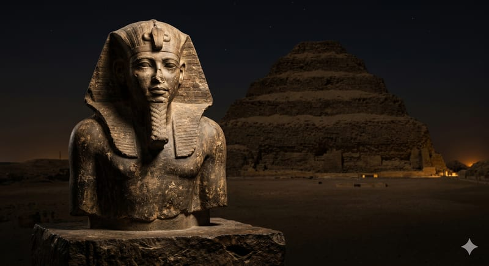
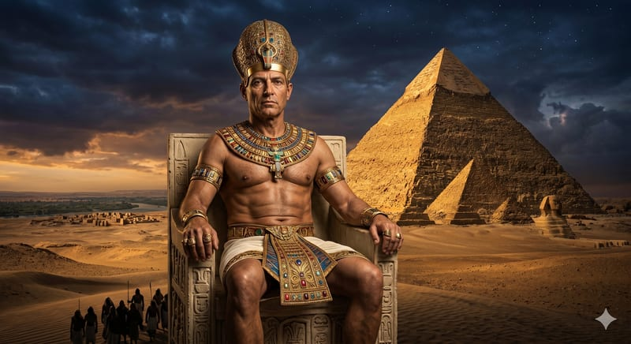
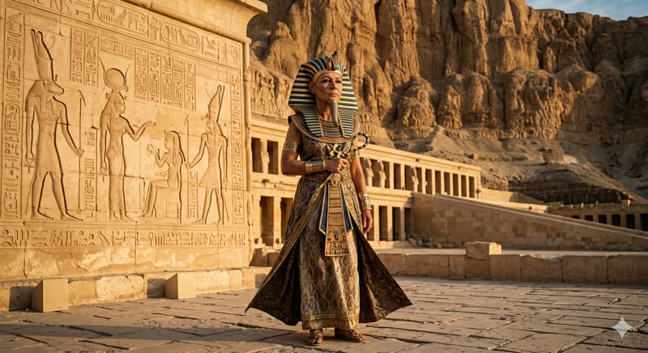
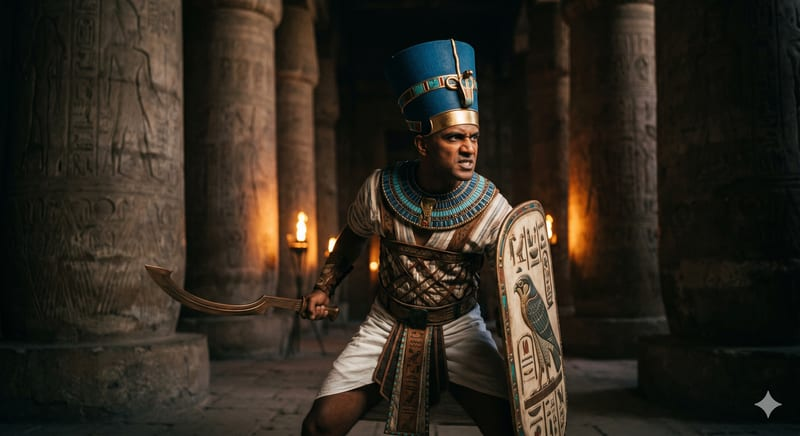
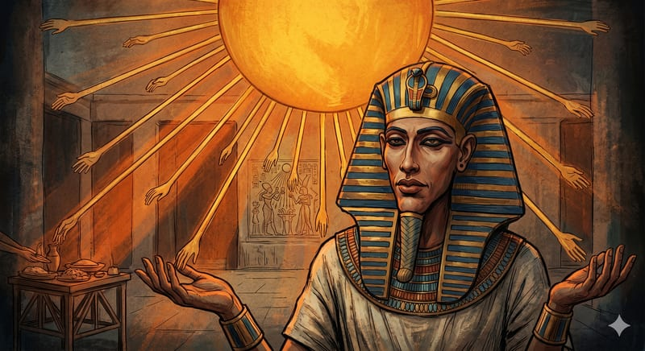
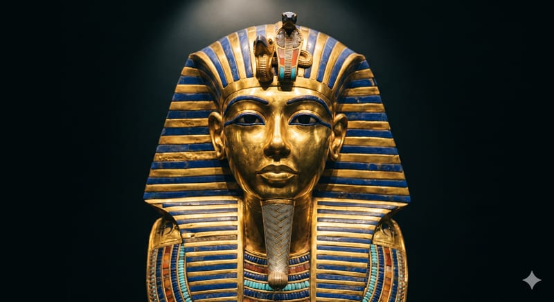
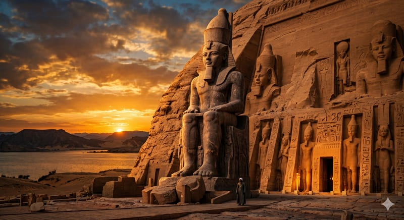
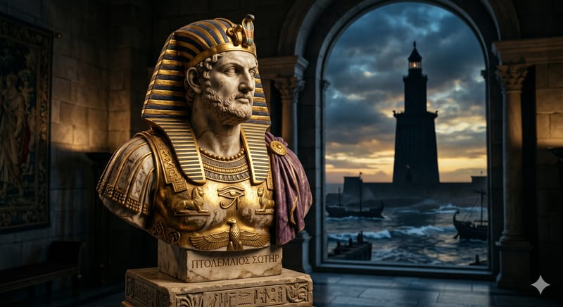
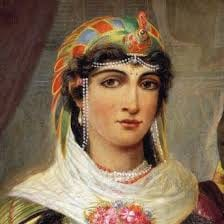

vers −2670 av. J.-C.
Djéser
IIIᵉ dynastie. Avec son architecte Imhotep, il fait construire la pyramide à degrés de Saqqara, premier monument monumental en pierre de toute l'humanité.
Lire la ficheNeuf figures, trois millénaires, neuf manières d'incarner ce pouvoir qui se voulait à la fois humain et divin. Chaque carte mène à une fiche dédiée.

IIIᵉ dynastie. Avec son architecte Imhotep, il fait construire la pyramide à degrés de Saqqara, premier monument monumental en pierre de toute l'humanité.
Lire la fiche
IVᵉ dynastie. Bâtisseur de la grande pyramide de Gizeh, plus haute construction humaine pendant près de 4 000 ans. Peu de traces du souverain, beaucoup de sa machine d'État.
Lire la fiche
XVIIIᵉ dynastie. D'abord régente, puis pharaon à part entière. Expédition au pays de Pount, temple de Deir el-Bahari, vingt ans de paix — puis un effacement posthume méthodique.
Lire la fiche
XVIIIᵉ dynastie. Surnommé le « Napoléon de l'Égypte ». Dix-sept campagnes, victoire à Megiddo, empire jusqu'à l'Euphrate. Le premier général dont on possède les carnets.
Lire la fiche
XVIIIᵉ dynastie. L'iconoclaste. Culte exclusif d'Aton, nouvelle capitale à Amarna, rupture artistique totale. Effacé à sa mort, redécouvert par l'archéologie.
Lire la fiche
XVIIIᵉ dynastie. Mort à 19 ans, oublié pendant 32 siècles, redécouvert en 1922. Un règne bref, un tombeau presque intact, et l'image la plus iconique de toute l'Égypte antique.
Lire la fiche
XIXᵉ dynastie. 66 ans de règne, Qadesh contre les Hittites, premier traité de paix écrit, et une emprise monumentale sur tout le pays — de Pi-Ramsès à Abou Simbel.
Lire la fiche
Dynastie lagide. Ancien général d'Alexandre, il fonde la dynastie ptolémaïque, fait d'Alexandrie la capitale culturelle du monde et lance la Bibliothèque.
Lire la fiche
Dernière souveraine lagide, dernière pharaon de l'Égypte indépendante. Polyglotte, stratège, négociatrice — et victime de la propagande romaine posthume.
Lire la ficheCette galerie grandira : reines sans couronne, scribes, architectes, prêtres, rebelles. Et pour situer chaque figure dans le fil long, la chronologie reste l'index principal.
Voir la chronologie complète Explorer les théories